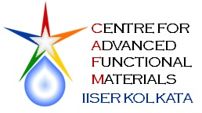
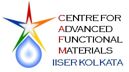

|  |
Smart Materials : Methods and Applications - 2017 SMMA-2017 20-22 April 2017 |
|
|  |
Smart Materials : Methods and Applications - 2017 SMMA-2017 20-22 April 2017 |
|
Program SchedulePosters
Venue: Ground Floor Auditorium, Teaching and Research Complex
Indian Institute of Science Education and Research Kolkata
Program schedule
20 April 2017 (Thursday)
| 1:30 PM - 2:30 PM | Registration |
| 2:30 PM - 2:50 PM | Inauguration |
SESSION I: Polymers and Supramolecules I
(Chair: Dr. C. Malla Reddy and Dr. Soumyajit Roy)
| 3:00 PM - 3:40 PM | KL-01: Prof. A. Ajayaghosh, CSIR-NIIST Thiruvananthapuram
Supramolecular Helicity of Molecular Assemblies |
| 3:40 PM - 4:10 PM | IL-01: Dr. Kana M. Sureshan, IISER Thiruvananthapuram
Topochemical Azide-alkyne Cycloaddition Reactions in Crystals and Organogels |
| 4:10 PM - 4:30 PM | IL-02: Dr. Priyadarsi De, IISER Kolkata
Sequence Controlled Polymers |
| 4:30 AM - 4:50 AM | HIGH TEA/COFFEE BREAK |
SESSION II: Polymers and Supramolecules II
(Chair: Prof. D. Chattopadhyay and Dr.Sanjio S. Zade)
| 4:50 PM - 5:20 PM | IL-03: Dr. Subi J. George, JNCASR Bangalore
Fuel-Driven Temporal Control on Supramolecular Assemblies |
| 5:20 PM - 5:50 PM | IL-04: Dr. E. Bhoje Gowd, CSIR-NIIST Thiruvananthapuram
Microphase Separation and Structural Evolution of Block Copolymers in Bulk and Thin Films |
| 5:50 PM - 6:05 PM | ST-01: Mr. Saikat Mukherjee, IISER Kolkata
Polynorbornene based Pt Prodrug for Efficient Site-specific Cancer Therapy |
| 6:05 PM - 6:20 PM | ST-02: Mr. Tanmay Das, IISER Kolkata
On-line Ammonia Sensor and Invisible Security Ink by Fluorescent Zwitterionic Spirocyclic Meisenheimer Complex |
| 6:20 PM - 6:40 PM | IL-05: Dr. Debangshu Chaudhuri, IISER Kolkata
Escaping Excimers in Multichromophoric Aggregates: Role of Complex Assembly Pathways |
| 7:00 PM - 9:30 PM | DINNER |
21 April 2017 (Friday)
| 8:00 AM - 9:00 AM | BREAKFAST |
SESSION III: Nanomaterials and Clean Energy I
(Chair: Dr. Pradipta Purkayastha and Dr. Prasun K. Mandal)
| 9:30 AM - 10:00 AM | IL-06: Prof. S. Sampath, IISc Bangalore
Nanostructured Electrocatalysts Based on Nitrides, Carbides and Chalcogenides |
| 10:00 AM - 10:30 AM | IL-07: Dr. Venkataramanan Mahalingam , IISER Kolkata
Lanthanide (Ln3+)-doped Nanocomposites for Efficient Photocatalytic degradation of Organic Pollutants |
| 10:30 AM - 11:00 AM | IL-08: Prof. Amlan J. Pal, IACS Kolkata
dI/dV Imaging of Some Complex Nanostructures vis-à-vis Heterojunction Solar Cells |
| 11:00 AM - 11:20 AM | TEA/COFFEE BREAK AND PHOTO SESSION |
SESSION IV: Nanomaterials and Clean Energy II
(Chair: Prof. A. P. Chattopadhyay and Dr. Debasish Haldar)
| 11:20 AM - 11:50 AM | IL-9: Prof. Satishchandra Ogale, IISER Pune
Nanoscience, Advanced Functional Materials, and Clean Energy |
| 11:50 AM - 12:20 PM | IL-10: Prof. Amitava Patra, IACS Kolkata
Light Harvesting in Nanoscale Systems |
| 12:20 PM - 12:50 PM | IL-11: Dr. Angshuman Nag, IISER Pune
Defect Tolerant Cesium Lead Halide Perovskite Nanocrystals |
| 12:50 PM - 1:05 PM | CT-01: Dr. Janardan Kundu, CSIR-NCL Pune
Galvanic replacement reaction (GRR) strategy as a powerful tool for multifunctional nano-materials |
| 1:05 PM - 3:00 PM | LUNCH BREAK AND POSTER SESSION |
SESSION V: Biomaterials I
(Chair: Dr. Punyasloke Bhadury)
| 3:00 PM - 3:40 PM | KL-02: Prof. T. Pradeep, IIT Madras
Clean Water using Advanced Materials: Science, Incubation and Industry |
| 3:40 PM - 4:10 PM | IL-12: Dr. Chittaranjan Patra, CSIR-IICT Hyderabad
Metal (Zn, Eu) Oxide Nanoparticle Show Dual Angiogenic and Neurotrophic Activity |
| 4:10 PM - 4:30 PM | TEA/COFFEE BREAK |
SESSION VI: Biomaterials II
(Chair: Dr. Neelanjana Sengupta and Dr. Supratim Datta)
| 4:30 PM - 5:00 PM | IL-13: Prof. Sanjib Senapati, IIT Madras
Ionic Liquids: A Smart Material in Long-term DNA Stability |
| 5:00 PM - 5:25 PM | IL-14: Prof. Jayasri Das Sarma, IISER Kolkata
Application of Functionalized Single walled Carbon Nanotubes and PDL coated CdSe Copolymers in Neural Cell Differentiation and Polarization in vitro |
| 5:25 PM - 5:40 PM | CT-02: Dr. Prolay Das, IIT Patna
Carbon Dot-DNA Hybrid Hydrogel for Controlled Release of Drugs |
| 5:40 PM - 5:55 PM | Dr. Deeksha Gupta, ACS Publications |
SESSION VII: Special Evening Lecture
(Chair: Dr. Raja Shunmugam)
| 6:15 PM - 7:00 PM | Prof. Swaminathan Sivaram, IISER Pune
Whither Translational Science in Academia : Risks and Opportunities |
| 7:15 PM - 9:30 PM | DINNER |
22 April 2017 (Saturday)
| 8:00 AM - 9:00 AM | BREAKFAST |
SESSION VIII: Materials Physics I
(Chair: Dr. Goutam Dev Mukherjee and Dr. Bhavtosh Bansal)
| 9:30 AM - 10:10 AM | KL-03: Prof. D. D. Sarma, IISc Bangalore
Electronic Structure of the Elusive Metastable State in Chemically Exfoliated Few Layer MoS2 |
| 10:10 AM - 10:40 AM | IL-15: Prof. Satyajit Banerjee, IIT Kanpur
Evidence of Superconducting and Magnetic Fluctuations both Above and Below Tc in BaFe2-xCoxAs2 Single Crystals |
| 10:40 AM - 10:55 AM | ST-03: Mr. Kapil Mandal, IISER Kolkata
Pressure and Temperature Dependence of Dielectric Behaviour of BaTiZrO3-BaCaTiO3 |
| 10:55 AM - 11:10 AM | ST-04: Mr. Tapas Bar, IISER Kolkata
Dynamics of Supercooling and Superheating of the Mott Transition in V2O3 |
| 11:10 AM - 11:25 AM | ST-05: Dr. Dibyendu Ghosh, IISER Kolkata
Graphene Quantum Dots Decorated Zinc Oxide Nanorods: Strategies for Exceptional Ultraviolet Photodetection |
| 11:25 AM - 11:45 AM | TEA/COFFEE BREAK |
SESSION IX: Materials Physics II
(Chair: Dr. Pradip Kumar Ghorai)
| 11:45 AM - 12:15 PM | IL-16: Dr. Goutam Sheet, IISER Mohali
A Reflection on Mesoscopic Superconductivity |
| 12:15 PM - 12:40 AM | IL-17: Dr. Nirmalya Ghosh, IISER Kolkata
Shaping the Fano interference in Plasmonic Crystals |
| 12:40 PM - 1:00 PM | PRIZE DISTRIBUTIONS AND VOTE OF THANKS |
| 1:00 PM – | LUNCH |